Tengo experiencia trabajando en marcos agiles, me caracterizo por tener una mente de liderazgo y mucha motivacion sobre aprender cada dia más.
Levantamiento de historias de usuario, diseño de base de datos en MySQL y programación con PHP para el proyecto "Desarrollo del módulo de integración de Moodle con el Cmap Cloud". Se trabajó con una metodología de trabajo SCRUM y sobre MOODLE
Profesor para el curso "Tu aplicación web en 3 pasos" con el framework de php "Laravel" en el Colegio Vocacional Monseñor Sanabria
Revisión de aulas, atencion al cliente y reparación de equipo de computo
Analista y programador en el proyecto LinkApp. Desarrollo del modulo ERP, diseño de base de datos en MySQL y programación con PHP. Se esta usando Laravel como fremework
Creado con PHP estructurado, CSS, JS, Bootstrap y Jquery.
El sistema consiste en un pequeño software para llevar la entrada laboral, salida al almuerzo, entrada al almuerzo y salida laboral de los empleados de una empresa. Ademas consta de una bitacora la cual solo los usuarios jefes podrán acceder para ver las marcas de sus empleados y tambien tiene una pequeña administración para buscar, editar y crear nuevos usuarios del sistema.
1. Consta de un login que seria el siguiente.
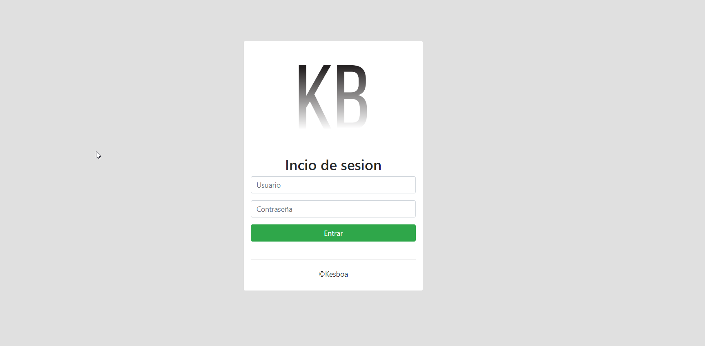2. Cuando ingresamos nos enviara al inicio que seria donde tenemos un relog a tiempo real, nuestra información y nuestras marcas
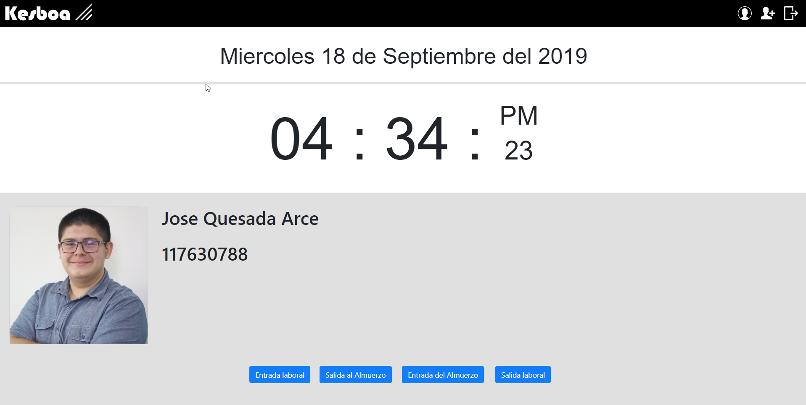3. Cuando presionemos los botones, el nos pondrá la hora en la que marcamos y esa seria la hora que se guarda en el sistema
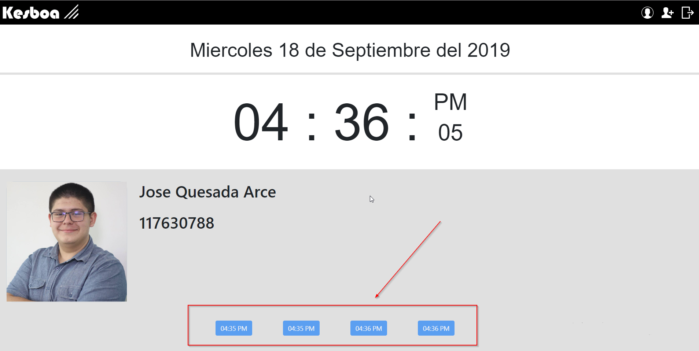4. Arriba a la derecha tenemos unos iconos los cuales son opciones que tiene su perfil. En este caso somos un usuario Administrador y tenemos la opcion de crear nuevos usuarios y ademas tenemos la opcion que tienen todos los usuarios que es la de ver nuestro propio perfil y modificarlo si se necesita.
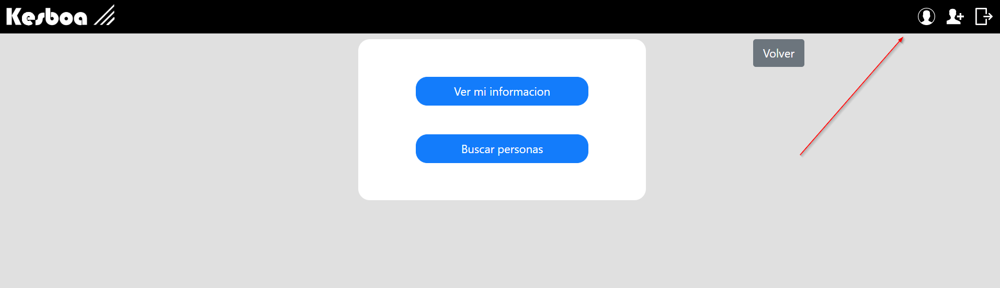5. Aqui seria cuando entremos a "Ver mi información".
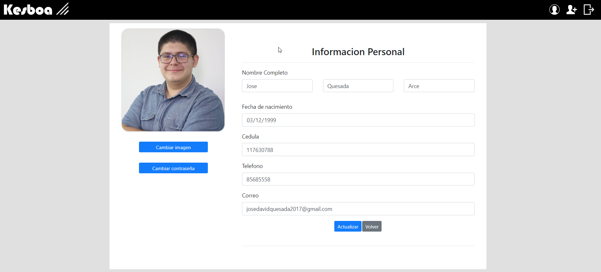6. Aqui seria cuando entremos a "Buscar personas". Nos muestra una lista en la cual podemos seleccionar a la persona que queremos modificar. La opcion solo esta disponible para usuarios administradores.
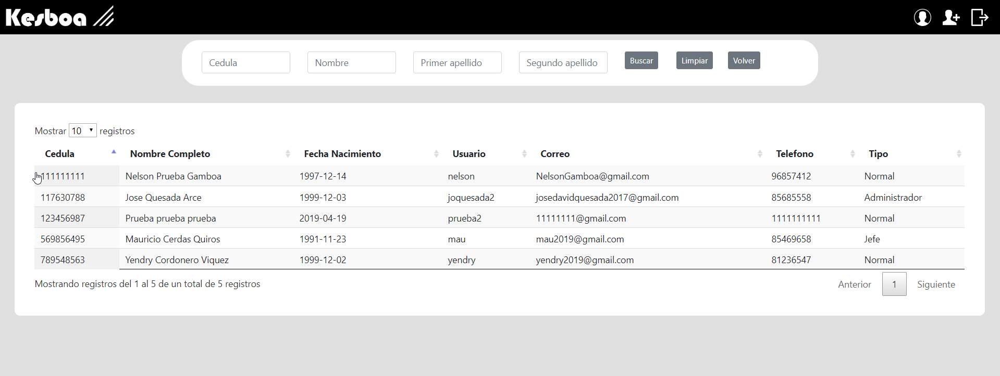7. Esta seria la opcion para crear un usuario y seria el icono que tiene un "+" arriba a la derecha. La opcion solo esta disponible para usuarios administradores.
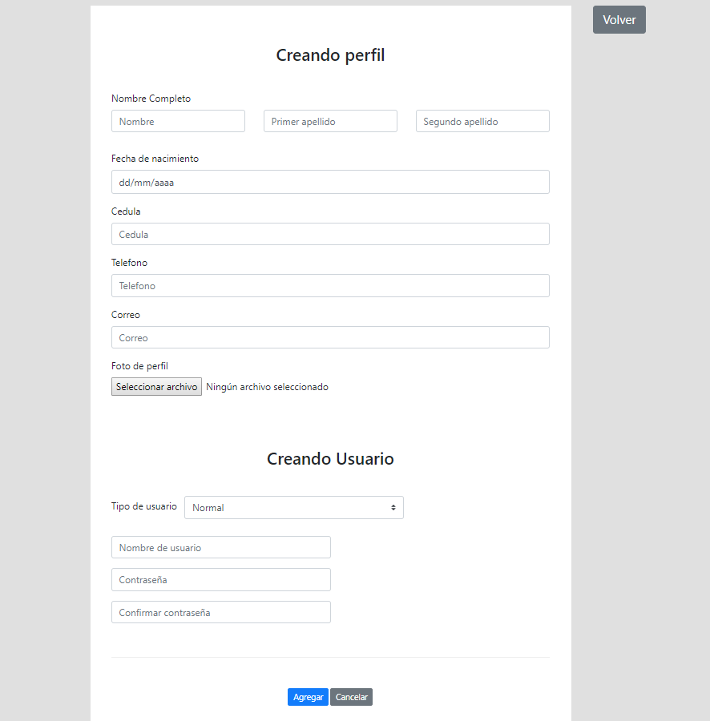8. Esta seria la opcion de "Ver bitacora" en la cual nos presenta las marcas de los usuarios. Opcion solo disponible para usuarios "Jefe".
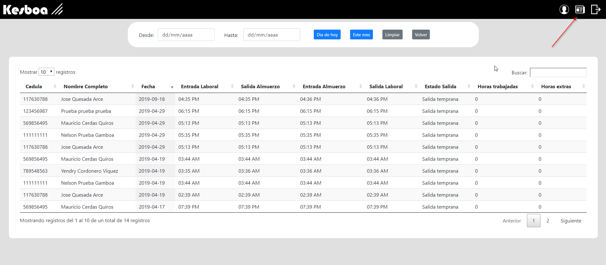La aplicación la pueden encontrar en github: https://github.com/JoseDavidQuesada/SistemaDeMarcas
Creado con Laravel (Framework de PHP), CSS, JS y Jquery.
La aplicacion fue creada para el Curso de Laravel (Tu aplicación web en 3 pasos) y consiste en un clon de Instagram en el cual podemos agregar images, darle likes a las publicaciones, comentar y editar nuestro perfil para cambiar nuestra información y avatar.
1. Consta de un login que seria el siguiente.
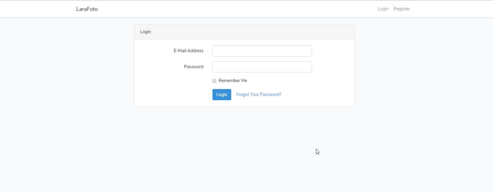2. Consta de un registro para nuevos usuarios.
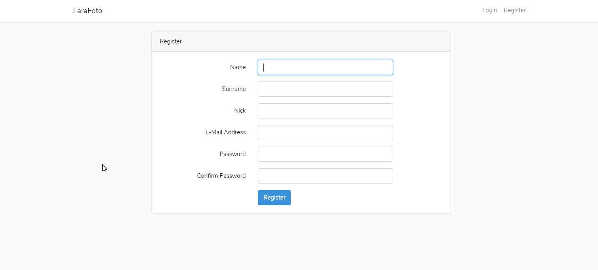3. Este seria el inicio, seria la vista que nos muestra cuando nos logueamos. Aqui podemos ver todas las images de los usuarios con su cantidad de likes y comentarios. Las imagenes van apareciendo de mas reciente a mas viejo.
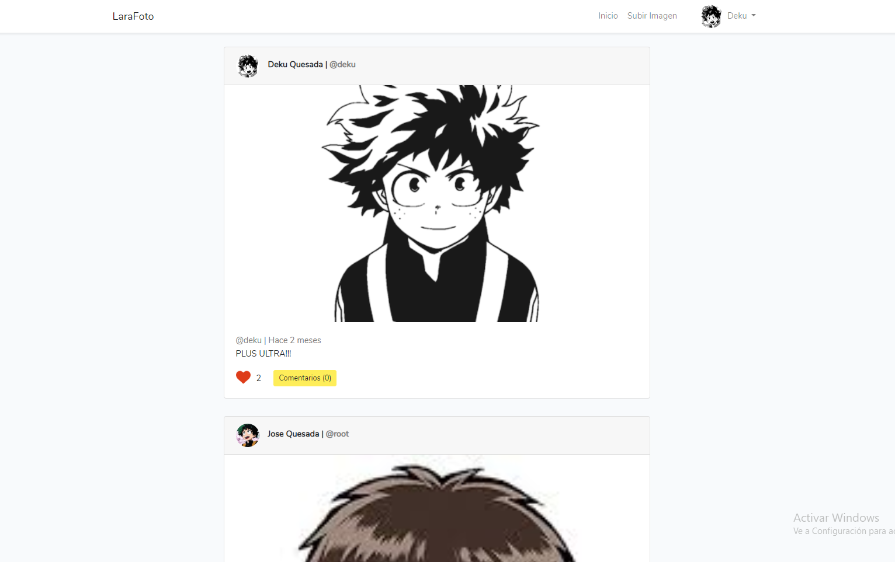4. Arriba a la derecha a la par del nombre de usuario, si clickeamos nos despliegla un pequeño menu. Aqui seria cuando entramos a configuración, esta opción es para editar nuestro perfil.
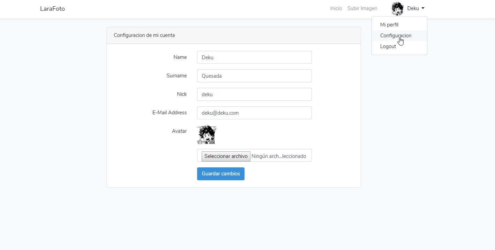5. Esta vista seria para subir una imagen al sistema
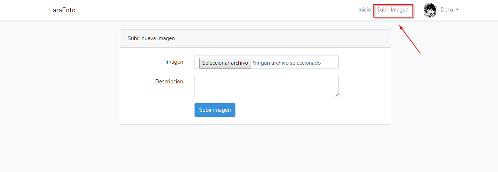6. Cuando le damos click a alguna imagen del inicio el nos enviará al detalle de la imagen en la que ahora podemos ver los comentarios de los usuarios y además podemos agregar nuestros comentarios.
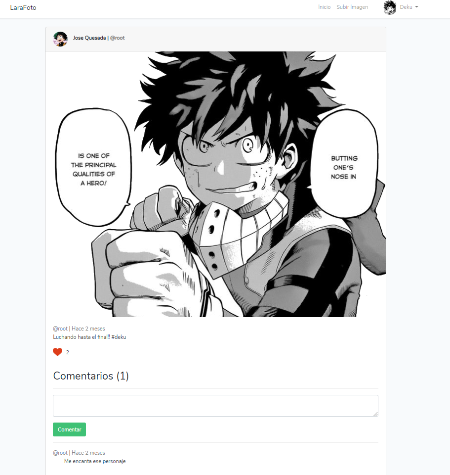7. En el inicio como en el detalle de la imagen podemos darle like a las publicaciones.
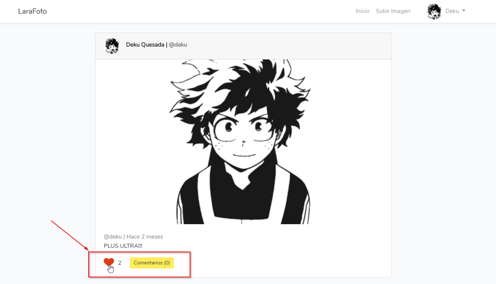La aplicación la pueden encontrar en github: https://github.com/JoseDavidQuesada/Curso-Laravel-Instagram